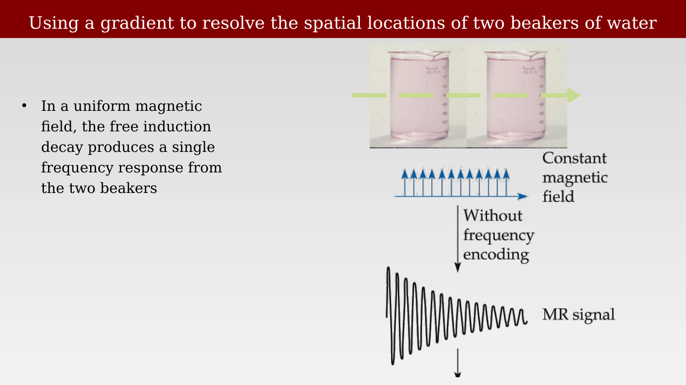
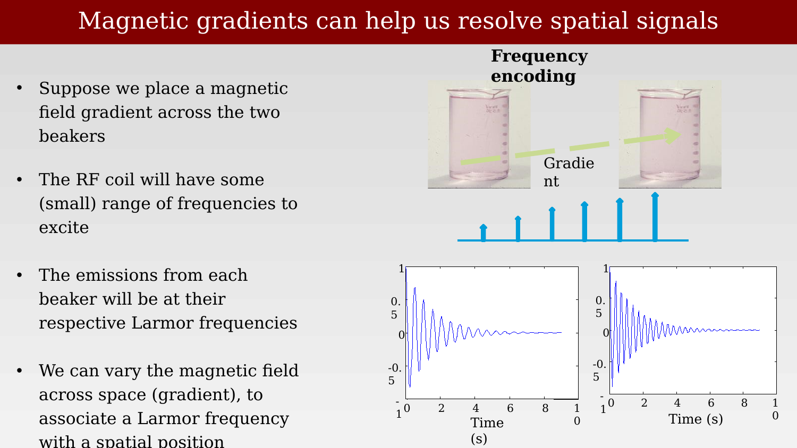
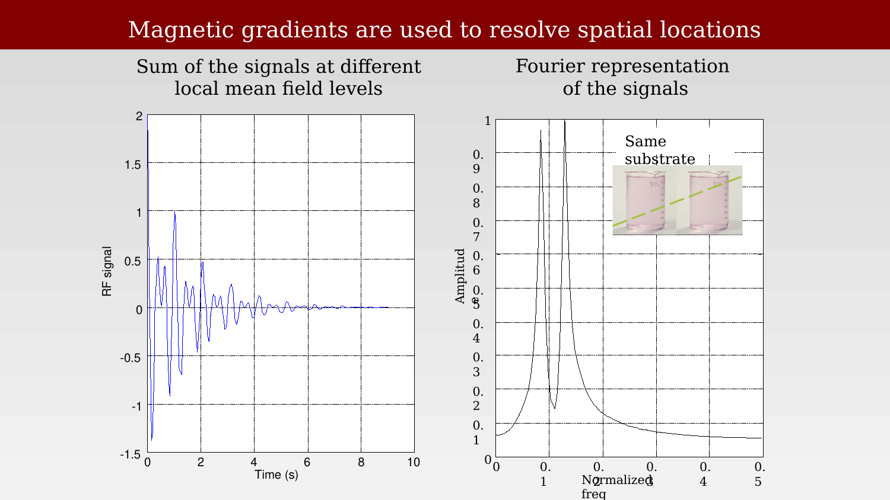
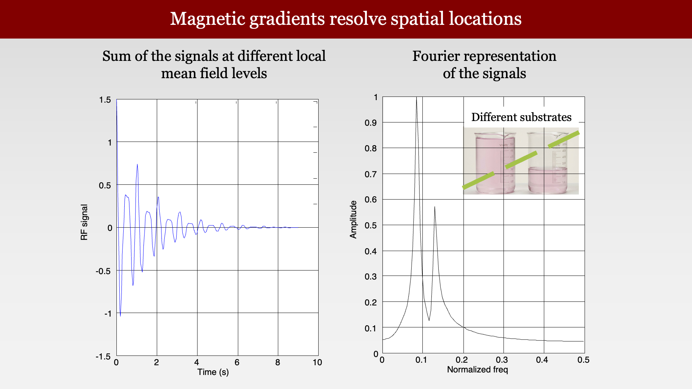
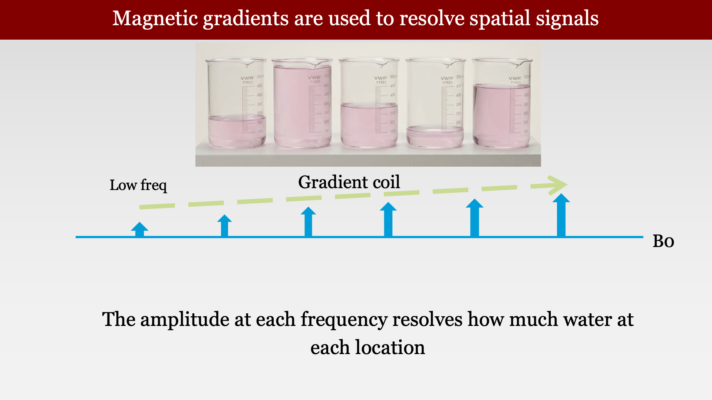
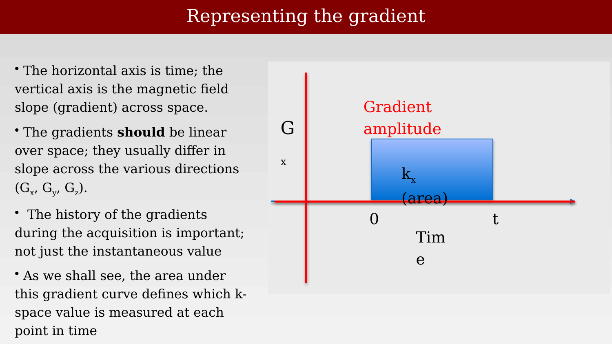
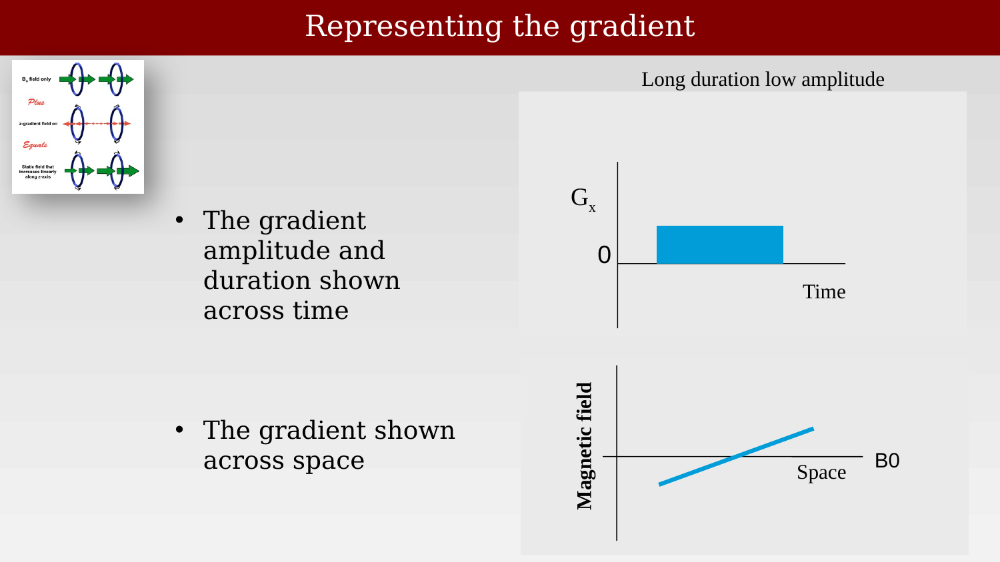
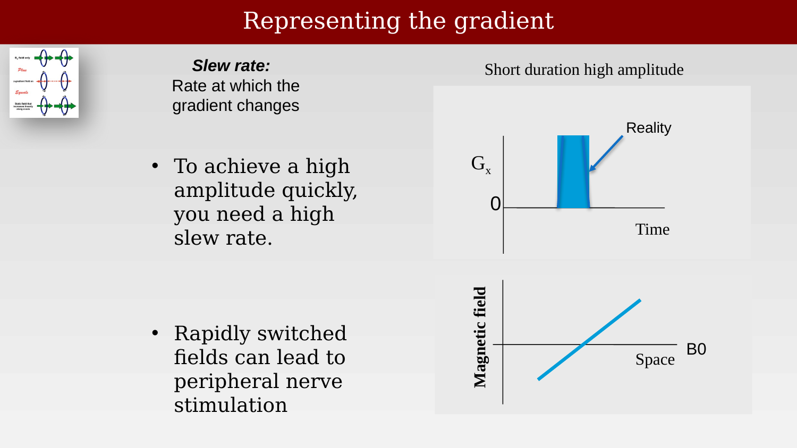
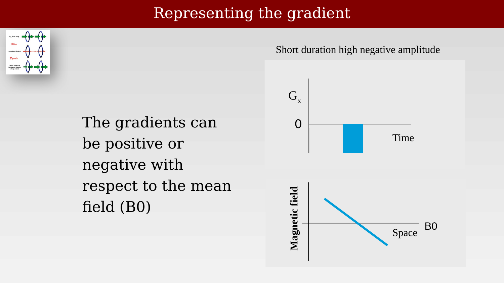

12 Image Formation Principles
Suggestions of all kinds for these lecture notes are welcome — whether it’s fixing small errors, raising bigger questions, or offering new perspectives. Please share comments through GitHub Issues. To make feedback easier to address, please point to the section you have in mind — by section number or a short snippet of text.
12.1 Image formation principles overview
The ability to create an image, not just measuring the bulk signal, is what makes MR so valuable for clinical usage. We can literally create a signal based on different types of MR contrast inside the head.
But how? The insights about how to create an image, and particularly how to create an image of MR contrasts relatively quickly, are wonderful and important set of new scientific insights. It is here that the imaging gradients become the central actors.
We begin by identifying a simple way to understand how we might localize, in principle. You will see the idea based on what you already know of the Larmor frequency. As we go deeper, however, the story becomes a bit more complex and interesting. The ideas are not too hard for for someone with just a little bit of math (linear algebra) to understand. It just takes a little getting used to.
12.2 Using a gradient to resolve the locations of two beakers of water

Suppose we have two beakers of water next to one another, and we put them in a uniform field, the bulk signal we measure will be the sum of the signals from the two beakers. IMHO: Physicists are fortunate that so many phenomena are additive.
12.3 Magnetic gradients can help us resolve spatial signals

What will we measure if we create a magnetic field that changes over space (a spatial gradient), so that the two beakers are in different magnetic field levels?
First, notice that the Larmor frequency for the two beakers would differ. So, to make sure we evoke a FID signal from both beakers, we would have to excite with a broader range of frequencies, covering their different Larmor frequencies.
Similarly, the Larmor frequency of the emitted signals will differ; a lower frequency will be emitted from the beaker in the lower magnetic field. So the measurements will be the sum of the two FID signals at the two different frequencies. Those lucky physicists and their additive systems!
12.4 Using temporal frequencies to resolve spatial locations

The graph on the left of Figure 12.3 shows the sum of the signals, as they vary over time. This is the representation we have been using up to now.
The graph on the right represents the signal in a different way. The signal is transformed into a temporal frequency representation. The horizontal axis represents the different frequency components, and the vertical axis is the amplitude of each of the components. (We will ignore phase for now). Notice that in this representation, there are two peaks. One is the Larmor frequency for the beaker in the lower magnetic field, and the second peak for the second beaker.
The signals at the different frequencies come from different locations. We are using temporal frequency analysis to resolve spatial position!
12.5 Magnetic gradients: when the substrate differs

In our first example, the two beakers have the same content. What if the amount of the water in the beakers differs? In that case, the FID amplitude might differ. The Larmor frequency, however, should be the same.
12.6 Magnetic gradients are used to resolve spatial signals

If we have an array of beakers with different amounts of water, the amplitude at each frequency tells us how much water there is at each position!
The purpose of this simple example is to introduce the idea that using magnetic field gradients can provide us with information about different locations in space. The information is contained in the nature of the signal. We will develop these ideas quite a bit further in the next sections, using more advanced tools. But the essential idea - spatial gradients enable us to resolve spatial position from the temporal signal - is with us for good.
12.7 Image formation: the gradients
Given the importance of gradients, we should have some words and pictures to describe them. The sequence of panels here describe the terms we use to describe gradients.
12.8 Representing the gradient
12.9 The basic representation

12.10 Showing the gradient across time and space

12.11 Rapidly turning it on and off

But we kept the area under the curve the same.
12.12 Gradients have positive and negative slopes
